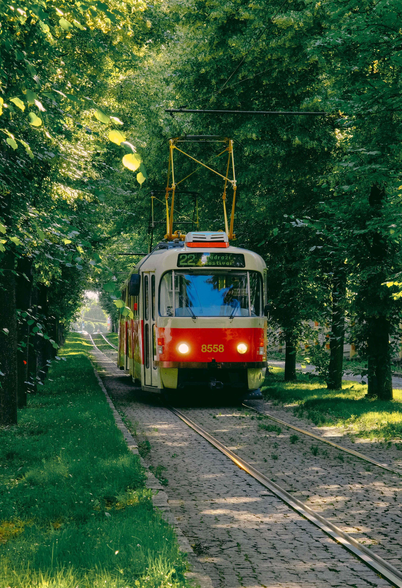

A red and white tram is traveling through a beautiful green forest. The tram is moving along a narrow railway surrounded by tall trees, grass, and plants. The sunlight shines through the trees, creating a peaceful and relaxing atmosphere. The photo shows a unique combination of public transportation and nature.